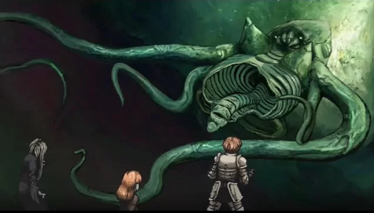

Contexto e Mundo
O jogo ocorre em um mundo onde a magia e os deuses foram, de certa forma, banidos ou esquecidos. A história começa em uma masmorra subterrânea, onde diversos personagens se veem forçados a sobreviver em meio a criaturas horríveis, cultos obscuros e forças sobrenaturais que governam o lugar. A masmorra é o centro de uma grande calamidade que afeta o mundo acima, com os personagens entrando nela por diferentes motivos, como a busca por poder ou por uma saída de um destino trágico.
A Masmorra e o Culto
O ambiente central de Fear & Hunger é uma masmorra profunda e esquecida, onde rituais macabros e experimentos horríveis foram realizados. Os cultos antigos, liderados por entidades chamadas de Deuses Antigos, buscaram abrir portais para outros mundos e manipular o destino dos seres humanos. Durante esses rituais, criaturas grotescas e entidades monstruosas foram liberadas, causando a deterioração da realidade dentro e fora da masmorra.
Os jogadores podem interagir com diversos cultos e facções dentro da masmorra, cada uma com sua própria agenda sombria, como o culto ao Deus da Dor ou à Entidade do Medo, que são forças primordiais que alimentam-se de sofrimento, morte e desespero.
Personagens Jogáveis
Os personagens jogáveis são um grupo diverso de indivíduos, cada um com suas próprias motivações para estar na masmorra, incluindo caçadores de recompensas, prisioneiros, curiosos e outros, que possuem habilidades e atributos específicos. Esses personagens são frágeis e têm poucas chances de sobreviver sem o uso de estratégias cuidadosas, já que a masmorra está cheia de inimigos perigosos e armadilhas traiçoeiras. A necessidade de gerenciar bem os recursos e tomar decisões difíceis acrescenta uma camada extra de tensão e complexidade à experiência.
A Calamidade e a História Central
O mundo de Fear & Hunger é marcado pela decadência, com a civilização em declínio e um grande cataclismo acontecendo. O jogo revela aos poucos que um evento apocalíptico está em andamento, e a única maneira de evitar que o mundo entre em colapso é explorar a masmorra, descobrir os segredos dos deuses antigos e tentar contornar a inevitabilidade do fim.
Os jogadores podem se deparar com diferentes finais, dependendo das escolhas feitas, com a possibilidade de interagir com várias entidades cósmicas e forças sobrenaturais que buscam controlar o destino da humanidade.
Elementos de Terror e Sobrenatural
O jogo é notável por seu estilo de horror psicológico e físico, com temas de tortura, sofrimento e monstros grotescos. Além disso, o sistema de combate é brutal e punitivo, com a mecânica de sobrevivência sendo extremamente difícil. Recursos como comida, curas e armas são escassos, e o jogador precisa escolher cuidadosamente seus passos.
Conclusão
Fear & Hunger é um jogo de terror psicológico com uma atmosfera sombria e mecânicas de sobrevivência desafiadoras. Ele se destaca pela dificuldade elevada, escolhas morais difíceis e um combate brutal. A exploração de temas perturbadores e a sensação constante de desespero tornam-no uma experiência única para os fãs de terror, sendo tanto angustiante quanto envolvente ao testar os limites da sanidade do jogador.